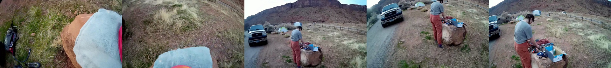
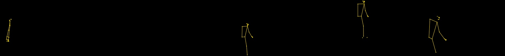
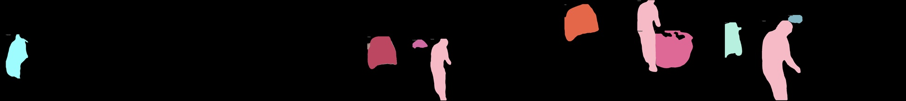
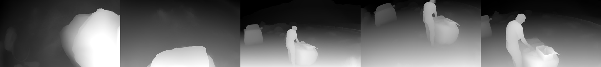

rgb

The sequence shows a person in a gray shirt and reddish pants standing near a large rock in a dry, grassy outdoor area with red rock formations in the background. A dark pickup truck is parked on a dirt path to the left. In the distance, a fenced area and a few tents are visible. The person interacts with items on the rock, including a blue box and various gear. The camera perspective shifts slightly across frames, showing different angles of the person and surroundings. The foreground in the first frame includes a light blue fabric and part of a red object, possibly a bag or clothing. The environment remains consistent across frames, with no significant changes in lighting or weather.
pose

Estimated pose map: yellow is retained body landmarks; magenta is hand landmarks. This is derived from RGB, not measured 3D geometry. Missing output does not prove absence.
Frame 1: body at left-lower, retained wrists: left-lower; 0 predicted hand(s).
Frame 2: no body meets retention rule; 0 predicted hand(s).
Frame 3: body at center-middle, retained wrists: center-middle; 0 predicted hand(s).
Frame 4: body at center-upper, retained wrists: center-upper; 0 predicted hand(s).
Frame 5: body at left-middle, retained wrists: center-lower; 0 predicted hand(s).
segmentation

Instance segmentation map: colored masks and labels are YOLOv8n-seg predictions over COCO classes; black means unsegmented, not empty space. Colors are not tracked identities. Labels can be wrong.
Frame 1: 1 predicted instance(s); backpack at left-middle (score 0.36).
Frame 2: 0 predicted instance(s); no accepted masks.
Frame 3: 5 predicted instance(s); person at center-lower (score 0.79); truck at left-middle (score 0.67); car at left-middle (score 0.41).
Frame 4: 3 predicted instance(s); elephant at right-middle (score 0.26); person at center-middle (score 0.92); car at left-upper (score 0.67).
Frame 5: 3 predicted instance(s); person at left-middle (score 0.91); truck at left-middle (score 0.44); umbrella at center-upper (score 0.35).
depth

Depth map: estimated relative inverse depth; brighter suggests nearer and darker suggests farther within the image. Values are not meters, and camera-frame scales need not agree. No depth ground truth is available.
Frame 1: brightest broad region right-lower (1.00); darkest broad region left-upper (0.08); values summarize normalized image intensity, not physical distance.
Frame 2: brightest broad region center-lower (0.85); darkest broad region right-upper (0.11); values summarize normalized image intensity, not physical distance.
Frame 3: brightest broad region center-lower (0.85); darkest broad region left-upper (0.02); values summarize normalized image intensity, not physical distance.
Frame 4: brightest broad region right-lower (0.76); darkest broad region left-upper (0.16); values summarize normalized image intensity, not physical distance.
Frame 5: brightest broad region center-lower (0.82); darkest broad region left-upper (0.02); values summarize normalized image intensity, not physical distance.
| Condition | Action | Justification | Both |
|---|
| rgb_images | None of the offered actions | None of the offered justifications | Wrong |
| pose_images | None of the offered actions | None of the offered justifications | Wrong |
| segmentation_images | Check the equipment for any damage, organizing and repacking it appropriately for the climb. | Pre-climb equipment checks are crucial for safety and success, minimizing risks and maximizing efficiency. Appropriate organization facilitates smooth operation. | Correct |
| depth_images | Check the equipment for any damage, organizing and repacking it appropriately for the climb. | Pre-climb equipment checks are crucial for safety and success, minimizing risks and maximizing efficiency. Appropriate organization facilitates smooth operation. | Correct |
| all_images | Check the equipment for any damage, organizing and repacking it appropriately for the climb. | Pre-climb equipment checks are crucial for safety and success, minimizing risks and maximizing efficiency. Appropriate organization facilitates smooth operation. | Correct |
| repeat1_images | None of the offered actions | None of the offered justifications | Wrong |
| repeat3_images | None of the offered actions | None of the offered justifications | Wrong |
| shuffled_all_images | Check the equipment for any damage, organizing and repacking it appropriately for the climb. | Pre-climb equipment checks are crucial for safety and success, minimizing risks and maximizing efficiency. Appropriate organization facilitates smooth operation. | Correct |
| rgb_descriptions | None of the offered actions | None of the offered justifications | Wrong |
| pose_descriptions | None of the offered actions | None of the offered justifications | Wrong |
| segmentation_descriptions | None of the offered actions | None of the offered justifications | Wrong |
| depth_descriptions | None of the offered actions | None of the offered justifications | Wrong |
| all_descriptions | None of the offered actions | None of the offered justifications | Wrong |
| repeat1_descriptions | None of the offered actions | None of the offered justifications | Wrong |
| repeat3_descriptions | None of the offered actions | None of the offered justifications | Wrong |
| shuffled_all_descriptions | None of the offered actions | None of the offered justifications | Wrong |